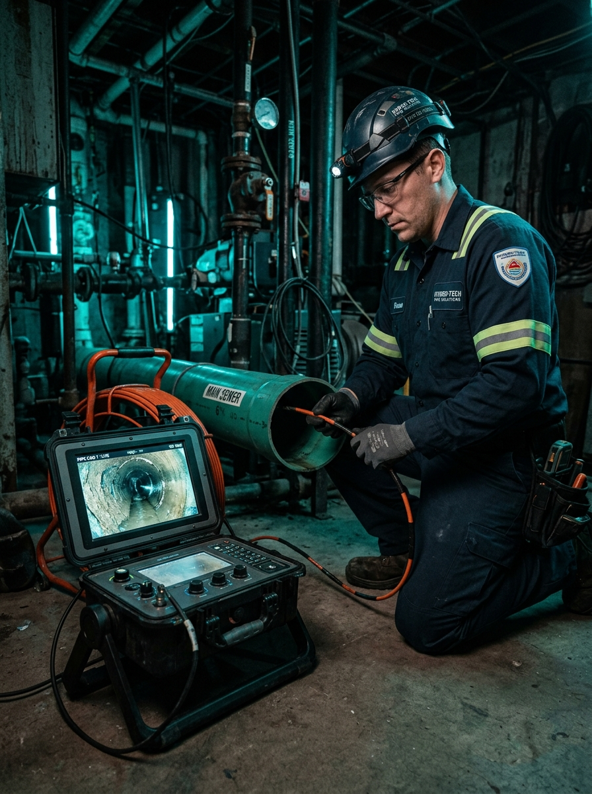

Atasco Sanitario en Ducto Técnico
- Problema:
- Tapón recurrente de alta complejidad.
- Hallazgo:
- Fuga activa con óxido severo.
- Resultado:
- Diagnóstico exacto en 45 minutos. Reparación enfocada.
Cámara HD al interior de tus tuberías. Evidencia visual, informe técnico profesional y cotización exacta — sin demoler tu propiedad.
Visita técnica desde $250.000. Respuesta en menos de 30 min.

● REC DEPTH: 14.2mEquipamiento industrial diseñado para entornos hostiles y diagnósticos de alta precisión.
Diagnóstico experto sin intervenciones destructivas.
Nuestras cámaras recorren el interior de tuberías y ductos documentando cada milímetro. No adivinamos: detectamos la causa raíz sin tocar la estructura de tu propiedad.
Informe técnico con capturas HD, video del recorrido y diagnóstico detallado. Un documento que convence asambleas, respalda seguros y da certeza.
Si corresponde reparación, la cotización nace de lo que vimos — no de lo que suponemos. Cero sorpresas en obra.
Problemas ocultos que dañan la infraestructura.
Acumulación de sedimentos y tapones críticos.
Grietas que causan filtraciones silenciosas.
Intrusión vegetal destructiva en conductos.
Costras calcáreas o de grasa solidificada.
Uniones mal selladas de origen.
Pandeo y aplastamiento de tuberías.
Un proceso diseñado para darte respuestas, no más preguntas.
Envíanos tu comuna, síntoma y urgencia por WhatsApp. Coordinamos visita.
Introducimos la cámara profesional y recorremos el sistema completo.
Tú ves en tiempo real lo que ocurre; ubicamos exactamente el problema.
Recibes informe técnico digital con hallazgos documentados, fotografías y video.
Entregamos cotización exacta respaldada por la evidencia (si corresponde reparación).
Desde tu llamada inicial hasta la entrega del informe técnico.
Evidencia visual que evitó demoliciones innecesarias.


"Me habían destapado tres veces y el problema volvía siempre. Con la cámara encontraron una conexión rota a 4 metros que nadie había visto. Se reparó ese punto exacto y nunca más tuve el problema."
"Necesitaba un informe técnico para presentar a los copropietarios. El documento con las fotos y el video fue clave: la asamblea aprobó la reparación en la misma reunión. Muy profesional."
Déjanos tus datos y te contactaremos por WhatsApp con nuestra disponibilidad y valores para tu sector.
Conoce más sobre los problemas de tuberías y cómo prevenirlos.
Descubre cómo la tecnología acústica y de ultrasonido puede localizar filtraciones ocultas en muros y pisos.
AlcantarilladoAprende a identificar a tiempo las señales tempranas que indican que tu red de alcantarillado está a punto de colapsar.
EdificiosGuía clave para administradores: cómo prevenir emergencias sanitarias y filtraciones masivas en condominios.
Obtén evidencia clara antes de invertir en una intervención innecesaria.